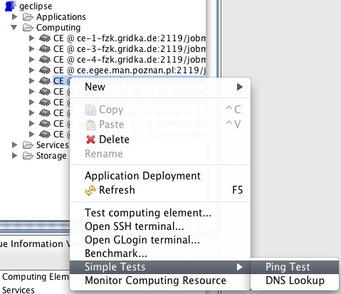
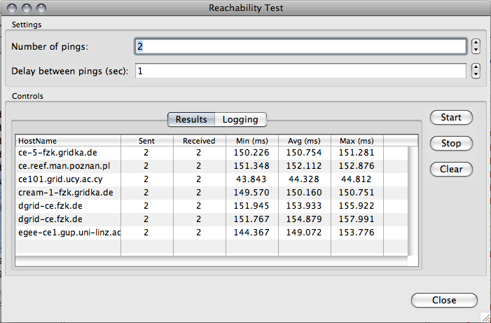
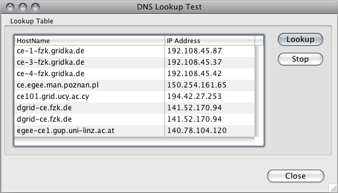
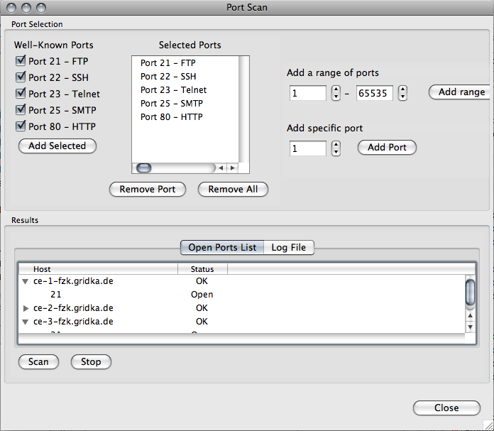

In the virtual folder named after the VO that is tied to your Grid Project you can browse the various resources belonging to the VO. From the context menu of all resources that represent a physical computer you will be presented with all the simple tests available.
In this dialog you can set how many pings you want to perform and the delay between the ping messages. When the "Start" button is clicked all the resources are pinged concurrently. You can stop this by clicking on the "Stop" button. In the "Logging" tab you can see the status of each individual ping messages sent.
In this dialog you can get the IP address of the selected resources. When the "Lookup" button is clicked all the resources are queried concurrently. You can stop this by clicking on the "Stop" button.
In this dialog you can test which ports are open on the selected resources. First you have to select and add various ports that you want to test. There are three ways to add ports that you want to scan. In the first you can select from the "standard" ports, like 21, and click "Add Selected". In the second way you can add rages of ports and click "Add range". In the final way you can add specific ports and click "Add Port". The added ports will appear in the "Selected Ports", in case you accidentally added some ports, these can be removed by selecting them and clicking "Remove Port" or click "Remove All" to remove all the ports in the list.
Once you have selected the ports that you want to scan, you click on "Scan". Each of the hosts are scanned in parallel, and the result are shown as they are evaluated. If at any time during the scan you would like to abort it you just click on "Stop". The result are shown in the "Open Ports List" and you can click on the name of the various resources to see which ports are open for the specific resource.
